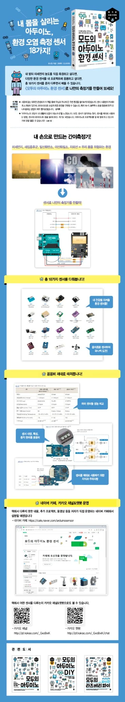
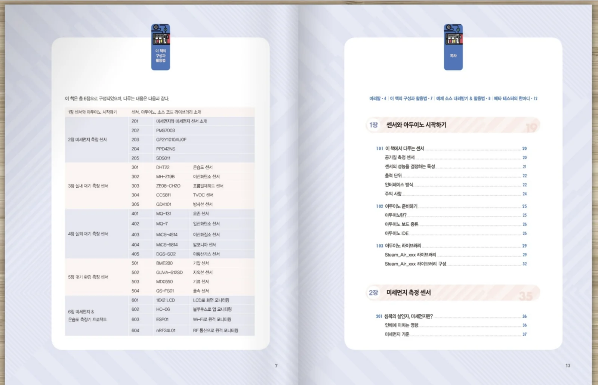
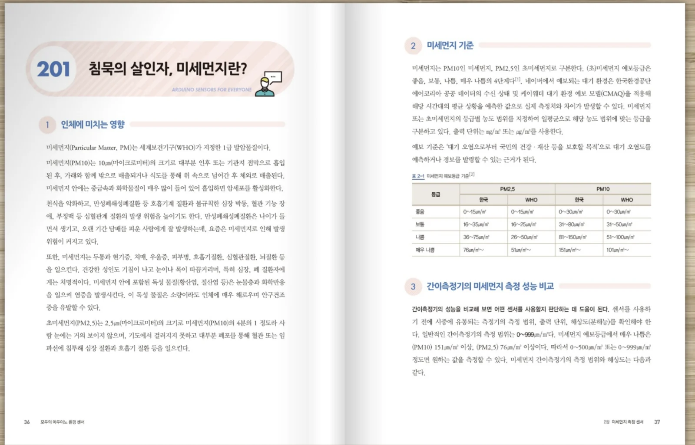
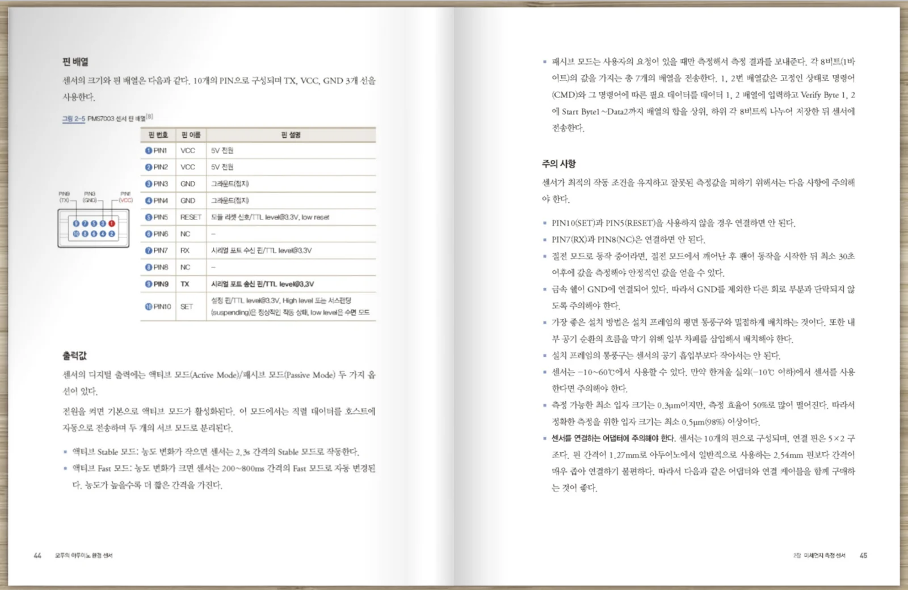
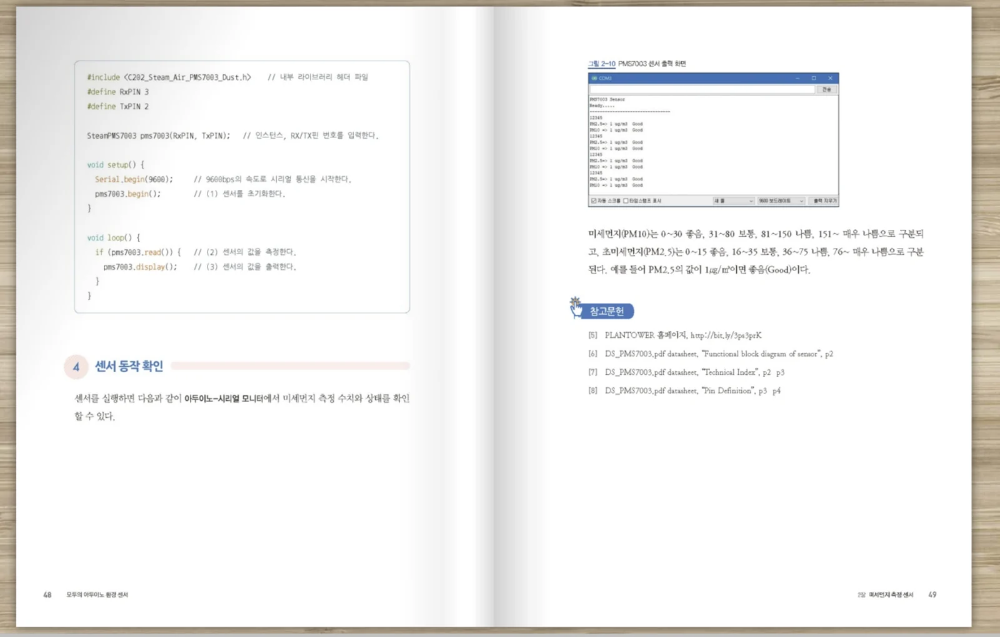

샘플 본문
아래 샘플은 책의 구성과 본문 스타일을 빠르게 이해할 수 있도록 책 소개, 목차, 본문 예시, 회로 연결, 코드 설명 이미지를 중심으로 구성했습니다.
도서 상세 소개

본문 미리보기




샘플 본문 요약
책은 각 센서를 소개할 때 먼저 측정 대상과 환경 문제를 설명한 뒤, 센서의 특징과 사양, 핀 배열, 동작 원리, 연결 방법, 코드 실행, 측정값 확인 순서로 전개됩니다.
따라서 단순히 회로를 따라 만드는 수준을 넘어, 왜 이 센서를 선택해야 하는지와 측정값을 어떻게 해석해야 하는지까지 함께 이해할 수 있습니다.